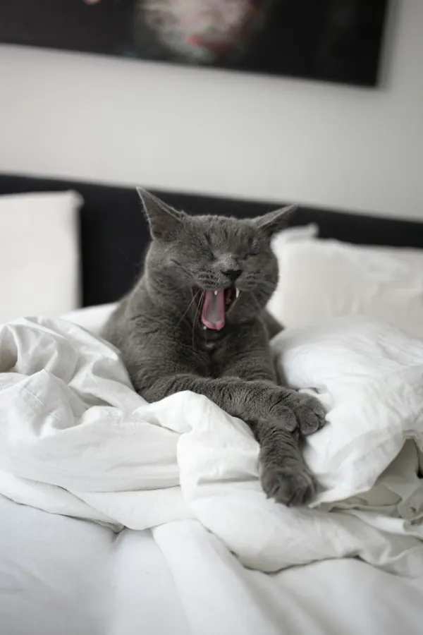

撮りためた猫の写真に、
毎日会える。
iPhoneの中から猫の写真だけを見つけて、
ホーム画面に毎日ちがう1枚を届けます。
アプリの中は、猫だけ。


スクショもレシートも、ごはんの写真も、まざりません。iPhoneの中で猫の写真だけを見つけて、集めます。自分で選んだり、整理したりする手間はいりません。
ホーム画面に、うちの子
集めた猫の写真から、毎日ちがう1枚がホーム画面のウィジェットに出ます。
-

きのう
-

きょう1年前のきょう
-

あしたむぎの誕生日
あの日の1枚が、また届く
ホーム画面の写真は、毎日ちがう子に。1年前のきょうや誕生日には、その日の写真が届きます。撮るだけ撮って見返せていなかった1枚に、また会えます。
くもりを晴らして、きょうの1枚
ホーム画面のまどは、毎日くもって届きます。タップすると晴れて、きょうの子に会えます。
家族のホーム画面にも
トークだと流れてしまう1枚を、実家のまどへ。家族のホーム画面に、うちの子が届きます。招待された家族は無料です。
毎月1日、先月が1冊に
その月の猫の写真から、アプリが1冊の作品にまとめて届けます。Plus（はじめの14日間は無料）。
もしものときの準備も、無料で
- 迷子のチラシ写真と特徴から、すぐ作れる
- 病院で見せるメモ気付いたことと体重を1画面に
- 預けるときのメモごはんとお世話のお願いを渡せる
- 避難の持ち物持ち出すものと期限を確かめる
まずは無料で
無料
0円
猫の写真の一覧・毎日ちがう1枚・もしものときの準備・招待されたまど
ねこのまど Plus
980円／月
月の作品と1年の作品・まどを作る・家族の手帳・記録の保存
はじめの14日間は無料
- 猫かどうかは、iPhoneの中で見分けます
- 元の写真は、動かさず消しません
- 広告もトラッキングもありません
価格は税込みです。Plusは月ごとの自動更新で、いつでも解約できます。やめても、写真とメモは消えません。
よくある質問
写真が勝手に送られたりしませんか？
送りません。猫かどうかはiPhoneの中で見分けます。まどに届くのは、自分で選んで「届ける」を押した写真だけです。
家族も払う必要がありますか？
いいえ。招待されてまどや家族の手帳に入る人は無料です。
14日間のお試しが終わったら？
解約していれば無料のまま使えます。写真・メモ・まどの写真は消えません。
iPhoneの「写真」アプリと何が違いますか？
猫の写真だけを集めて、毎日ちがう1枚をホーム画面に届けます。今ある写真をそのまま使うので、移す必要はありません。
写真を届けられないときは？
iPhoneの「設定」→「プライバシーとセキュリティ」→「センシティブな内容の警告」がオンのときは、届ける前と表示する前に、iPhoneの中で写真を確かめます。センシティブな写真は届けず、表示もしません。
Androidで使えますか？
いいえ。iOS 17.1以降のiPhoneで使えます。

うちの子に、毎日会いに。
iOS 17.1以降のiPhone